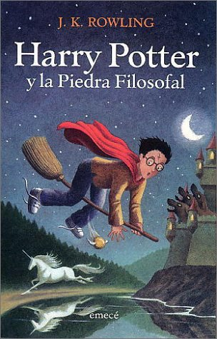
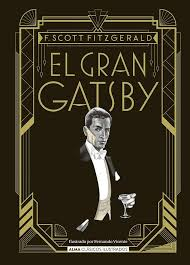
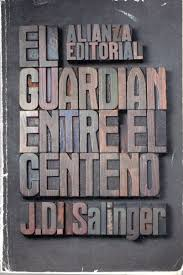

Reseñas Destacadas



Harry Potter y la Piedra Filosofal
La historia mágica de un joven que descubre un mundo de hechicería y aventuras.
El Gran Gatsby
Una joya que retrata la opulencia y el declive del Sueño Americano.
1984
La aterradora visión distópica de un futuro donde la libertad se ve amenazada.
El Guardián Entre el Centeno
La rebeldía y confusión adolescente de Holden Caulfield en la literatura.